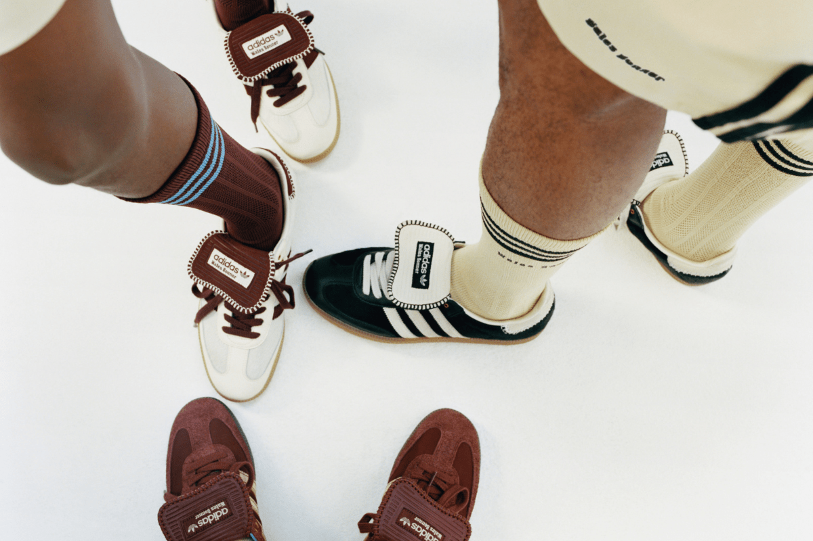

Born x Raised es un reconocimiento al valor de la cultura en la esencia de una comunidad. Una marca que celebra los diferentes matices que hacen singular estos escenarios que hoy se representan en esta nueva colaboración de los Nike SB Dunk Low Born x Raised.

Fiel a la exploración continua de los códigos deportivos que caracteriza a la diseñadora, la colección propone una selección de estilos elegantes que reinventan el legado deportivo de adidas
Aquí tenemos el primer vistazo al primer proyecto de colaboración de 18 East con Vans Vault
Desde el Año del Dragón hasta el Día de San Valentín, el Swoosh ya ha comenzado a sentar las bases para la primera mitad de 2024.

La unión creativa de Kim Jones y Eli Russell Linnetz saca a la venta la colección que causó furor en primavera. Y viene con muchísimos artículos añadidos.